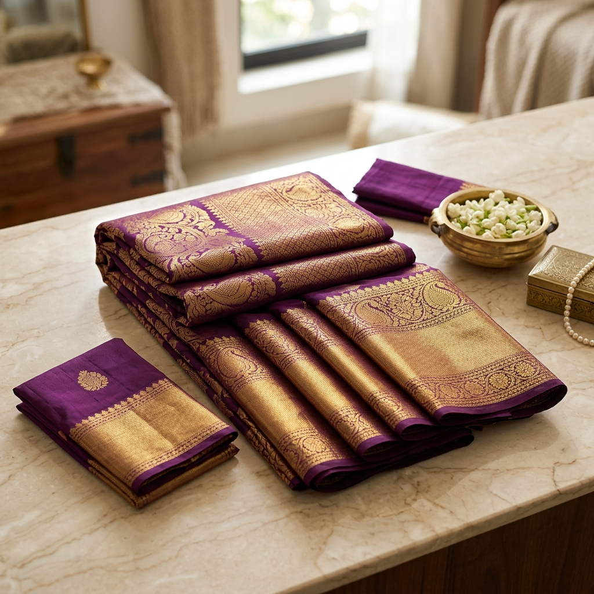

Why the Wedding Saree Matters
In South Indian culture, the wedding saree is far more than just an outfit — it is a symbol of tradition, family heritage, and the beginning of a new chapter. The bride's saree often becomes the centrepiece of the entire ceremony, photographed from every angle, admired by every guest, and treasured for generations. This is why choosing the right bridal saree deserves careful thought, ample time, and the guidance of people who truly understand textiles.
At Radhika Sarries, we have helped thousands of brides across Karnataka find their dream wedding sarees. With direct sourcing from Surat's finest weavers and an in-house styling team, we ensure every bride walks down the aisle feeling absolutely magnificent. Whether you are planning a grand temple wedding in Mysore or an intimate ceremony in Bangalore, this guide will help you discover the perfect drape for 2026.
The Timeless Kanjivaram Silk
No conversation about South Indian bridal sarees is complete without the iconic Kanjivaram silk. Originating from the temple town of Kanchipuram in Tamil Nadu, these handwoven masterpieces are characterised by their rich, lustrous silk and heavy gold zari borders. The hallmark of a genuine Kanjivaram is the contrast border — the pallu and body are often woven separately and interlocked, a technique that makes these sarees incredibly durable.
For 2026 weddings, the trending Kanjivaram colours include deep temple reds, royal magenta, emerald green, and classic maroon with gold. At Radhika Sarries, our bridal sarees Karnataka collection features hand-selected Kanjivaram pieces ranging from classic designs to contemporary interpretations with lighter weight for all-day comfort. Prices start from ₹8,000 for pure silk designs and go up to ₹45,000 for exclusive handloom pieces with real gold zari.

Banarasi Silk — The North-South Fusion
While Kanjivaram reigns supreme in the South, Banarasi silk sarees have been steadily winning hearts of South Indian brides who want something equally regal but with a different aesthetic. The intricate Mughal-inspired motifs — paisley, floral jaal, and architectural patterns — bring a distinctive charm that photographs beautifully.
The connection between Surat and Banarasi weaving is centuries old. Many of our finest Surat sarees are woven using traditional Banarasi techniques with contemporary design sensibilities. The result? Lightweight, richly patterned sarees that drape effortlessly through hours of wedding rituals. Our brides particularly love the red-and-gold Banarasi organza sarees for the reception — they offer the grandeur of heavy silk without the weight.
A wedding saree is not just an outfit — it is the first heirloom you create as a bride.
Designer Georgette Sarees
Modern brides are increasingly drawn to designer georgette sarees — and for good reason. Georgette offers unparalleled comfort, flows beautifully for photographs, and can be embellished with everything from hand-embroidered sequins to stone work that catches the light magnificently.
At Radhika Sarries, our designer georgette collection features exclusive pieces from Surat's top design houses. These are particularly popular for sangeet ceremonies, reception parties, and destination weddings where the bride wants to look glamorous without feeling weighed down. Trending colours for 2026 include pastel peach, powder blue, champagne gold, and the ever-classic deep red.
How to Choose Your Bridal Saree
Selecting the perfect silk sarees wedding ensemble can feel overwhelming. Here are our expert tips from years of helping brides at Radhika Sarries:
- Start early — Begin shopping at least 3–4 months before your wedding date. This gives you time to explore options, make alterations, and source matching accessories.
- Consider the ceremony type — A temple wedding calls for traditional silks, while a garden reception might suit lighter georgettes or chiffons.
- Think about comfort — You will wear your saree for 8–12 hours. Choose a fabric and weight you can manage comfortably.
- Match your jewellery first — If you already have your bridal jewellery, bring it along when shopping. The saree should complement, not compete with, your ornaments.
- Trust the drape test — Always try draping the saree before purchasing. How it falls on your body matters more than how it looks on the shelf.
- Set a realistic budget — Quality bridal sarees are an investment. Allocate your budget wisely between the main ceremony saree and other function outfits.
Why Shop at Radhika Sarries?
At Radhika Sarries, we are not just another saree shop — we are your bridal styling partners. Here is what sets us apart:
- Direct Surat sourcing — We eliminate middlemen, bringing you premium fabrics at wholesale-competitive prices
- Curated bridal collections — Our team handpicks every bridal saree in our collection, ensuring quality and authenticity
- Expert styling advice — Our staff includes trained textile experts who can guide you on fabric quality, colour matching, and draping styles
- Karnataka-wide trust — With stores across the state and 5000+ happy customers, we are the preferred choice for ethnic fashion in Karnataka
- WhatsApp consultation — Cannot visit in person? Send us your requirements on WhatsApp and we will curate options for you
Your wedding day deserves a saree that makes you feel like the most beautiful woman in the room. Visit Radhika Sarries today, and let us help you find that perfect drape.